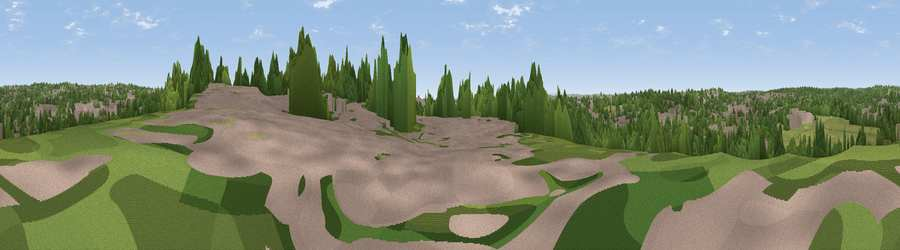

Viewpoint near Austhorpe
#43794 in England · top 92% of its area beats it · near AusthorpeWhere it is
The exact computed spot (SE 34325 34925). Click the marker for map links.
The view, rendered

A 360° render of this exact spot computed from the terrain model, tree cover and land cover — summer colours, afternoon light, calibrated against photographs of famous viewpoints. Real trees, hedges and buildings will differ in detail.
The panorama
Grey silhouette: terrain skyline in each direction (720 bearings, Earth curvature and refraction included). Dashed green: skyline with trees (+15 m) and buildings (+8 m) as obstacles. Blue strip: how far the ground is visible on each bearing.
Where the view opens
Wedge length = distance to the farthest visible ground on that bearing (vegetation-aware). Rings at 10, 25 and 50 km.
What fills the view
35% woodland · 34% grassland · 30% built-up ·
Angular shares of the visible panorama (visual magnitude), not map area. Landscape diversity 0.49 (0–1 Shannon).
Key numbers
More beautiful places nearby
The staircase of upgrades: each row has a higher view potential than everything closer. Driving times are estimates from straight-line distance, calibrated against real road routing — check an actual route before setting out.
| Place | Direction | Drive | Score |
|---|---|---|---|
| Viewpoint near Scholes | NE · 2 km | ~5 min | 33.7 |
| Viewpoint near Shadwell | NNE · 5 km | ~11 min | 53.8 |
| Viewpoint near Kippax | ESE · 8 km | ~16 min | 57.9 |
| Viewpoint near Micklefield | ESE · 10 km | ~19 min | 65.7 |
| Rawdon Trig point | WNW · 13 km | ~24 min | 69.6 |
| Rawdon Billing | WNW · 14 km | ~25 min | 73.0 |
| Viewpoint near Otley | WNW · 17 km | ~30 min | 77.5 |
| Hood Hill | NNE · 49 km | ~70 min | 79.6 |
53.80949, -1.48022 · source: screening · position refined by local search. Computed location — check access rights before visiting.